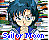

titul epizody
Nemuribyou Nazono, otomeno mamore kokoro koisuru
[Tajemná spící nemoc, ochránce milujících srdcí mladých
dívek]
Datum vysílání 21. 03. 1992 Souhrnná verze 1.0, Hitoshi Doi,
06. 10. 1992
[Upraveno podle Sailor Moon anime, manga svazek 1]
"Zapsáno podle starých poznámek. Doufám že tento díl opět uvidím.
Snad jsem to zapsal dobře."
Usagi a Naru-chan poslouchali pozdní noční rozhlasový program, ve kterém se četli milostné dopisy. Hlasatel uvedl dopis od Haruny. Usagi byla překvapená, protože to bylo jméno její učitelky. Hlasatel uvedl, že posílají brož ve tvaru květiny těm jejichž dopisy odvysílali. Hlasatel se jmenoval Jay Daitou. Usagi si vzpomněla, že ještě nikdy nepsala milostný dopis. Ale Luna jí vynadala řekla, aby šla spát, protože má důležité poslání a potřebuje dostatek odpočinku. Tak šla Usagi spát.
Následující ráno, táta Usagi četl noviny. On si všimnul článku v kterém se psalo o tom, že mnoho lidí onemocnělo tak, že usnuli a nemohli je vzbudit. Podotkl, že by se chtěl zastavit a usnout alespoň na chvíli. Matka Usagi nadhodila, že může chtít po manželovi aby pracoval tvrdě. Usagi otec odpověděl, že jen žertoval. Potom Usagi přišla k jídelnímu stolu v kuchyni a podotkla, že jde pozdě. Usagi uchopila topinku a běžela do školy.
Usagi přišla do školy pozdě. Čekala, že ji učitelka vyplísní. Ale když přišla do třídy, shledala, že Haruna-sensei tam ještě není. Ve dveřích se objevila velmi ospalá Haruna a vstoupila do třídy. Začala vyvolávat prezentaci, ale zastavila se. Řekla všem ať studují podle svého. Usagi si všimnula nové květinové brože, kterou učitelka měla. Pak Haruna usnula na katedře. Všichni měli o učitelku starost, ale Usagi byla ráda, že výuka neprobíhala.
Zatím Luna mluvila sama se sebou nahlas a šla ulicí.
Spatřil ji Motoki, zavolal: "Hi".
Luna byla otřesena a předpokládala, že ji Motoki uslyšel. Ale
Motoki ji pohladil dal jí nějaké mléko. Luna byla ráda, a doufala
že se Usagi se má také dobře. V tom přijela sanitka. Divila se co
se stalo ve škole. Sanitka odvedla Harunu, protože usnula a už se
nevzbudila.Když Naru-chan řekla Usagi o nedávné vlně nemocných s
podobnými příznaky, Usagi odpověděla, že by mohlo být zábavné
spát a snít celou dobu.
Ve stanici radia FM č. 10, obdržela ředitel dopis od fanynky pro neexistující program, Midnight Zero. Ředitel se zvedl a rozhodl se to prošetřit. Ale jedna z redaktorek si dopis vzala, že to prošetří sama.
Po škole, Naru-chan pověděla Usagi, že napsala mnoho milostných dopisů do Midnight Zero. Usagi se zeptala co napsala, ale Naru-chan odpověděla, že na tom nezáleží. Usagi napadlo, jestli by nějaký dopis nenapsala sama. Přemýšlejíc, rozběhla se skrz přesvětlenou plochu a vrazila do nějaké osoby. Usagi se okamžitě omluvila. Když Usagi vzhlédla, poznala smějícího se Mamoru. Mamoru požádal Usagi aby nestála v cestě, Usagi se rozčílila. Naru-chan si pomyslela, že Mamoru je velmi pěkný.
Doma Usagi zkusila napsat milostný dopis, ale nic ji nenapadalo. Rozhodla se, že požádá Jay Daitou, tu DJ z Midnight Zero, o radu. Usagi šla do stanice radia s Lunou, ale strážný u vchodu jí sdělil, že stanice nevysílá pořad s tímto jménem. Tak se Usagi vrátila domů. Když o půlnoci, Usagi znovu naladila Midnight Zero, pronesla, že ji strážný oklamal. Ale když Luna zkontrolovala seznam stanic v novinách nenalezla program s tímto jménem. Zatím v rádiu ohlásila Jay Daitou milostný dopis pro tuto noc – dopis napsaný dívkou Naru-chan. To Usagi překvapilo.
Druhý den ve škole, Naru-chan ukazovala svým přátelům květinovou brož, kterou dostala. Usagi si všimla, že byla stejná jakou měla Haruna. Z toho usoudili, že dopis vysílaný předevčírem byl skutečně od Haruny. Pak si Naru-chan připjala brož, zmalátněla a usnula. Usagi se k ní přiblížila, vdechla výpary z brože a usnula také. Zdál se jí sen. Byla s Tuxedo Kamenem. "Tuxedo Kameni, budete můj milý?" Odpověděl, že pravděpodobně ano. "Potom prosím ukažte tvář." Právě když Tuxedo Kamen snímal masku, Luna zavřeštěla a Usagi se vzbudila. Byla na ošetřovně. Naru-chan stále spala v posteli. Luna usoudila, že zlo pracuje ve stanici rádia .
Jadeite mluvil se svým youmou (démonem). Youma používal
květinovou brož, aby ukradl energii ze snů mladých zamilovaných
dívek. Usagi a Luna šli do stanice radia. Ale potřebovali způsob
jak se dostat přes strážného. Luna dala Usagi kouzelné
transformační pero. Pokynem "Moci Měsíce", se Usagi změnila do
podoby dospělé zaměstnané ženy - hlasatelky a vstoupila do
stanice radia. Když spatřila Jay Daitou, pomyslela si, že je
pěkná. Ale Luna z ní cítila nepřítele. Usagi tomu nevěřila, ale
objevili všechny další zaměstnance v hlubokém spánku. Jadeite
obsadil stanici radia. Usagi pronikla do hlasatelny a varoval
každého posluchače.
"Přerušujeme vysílání důležitou zprávou. Zjistili jsme že
květinová brož zasílaná tímto programem je velmi nebezpečná.
Prosím nedotýkejte se jí."
Jadeite se rozhněval. Youma skočil do hlasatelny a změnil se do
normálního ošklivého tvaru. Youma zkusil odstranit (odhodit)
Usagi.
"Sílo Měsíčního krystalu, Pracuj!"
Usagi se změnila na Sailor Moon. Objevil se Jadeite, youma
zaútočil na Sailor Moon. Vzdušný vír vytvořil díru na střeše, a
vymrštil Sailor Moon ven. Youma skočil za ní, Sailor Moon použila
"Měsíční čelenku" a porazila youma. Stanula proti Jadeite.
Opakovala útok s "Měsíční čelenkou", ale Jadeite útok odrazil.
Jadeite znovu zaútočil na Sailor Moon, chystal se ji chytit, ale
růže vletěla mezi jeho kroky. Jadeite zmizel.
Následující den, každý kdo byl uspaný kouzlem se vzbudil. Ve
škole byla Usagi zaneprázdněná psaním milostného dopisu Tuxedo
Kamenovi. Naru-chan přišla a sebrala jí dopis. Řekla, že Midnight
Zero skončila vysílání. Usagi odpověděla, že se chystala předat
dopis osobně. Naru-chan chtěla dopis přečíst. Zatímco Usagi
Naru-chan stíhala, Haruna-sensei přišla do třídy.
Usagi křičela: "Vrať mi můj milostný dopis zpět!"
Haruna ho zabavila, s tím, že jej ostatní chtějí vidět také.

Sailor Moon page Hitoshi Doi site explorer(c) Takeuchi Naoko, Koudansha, TV Asahi, Toei Douga